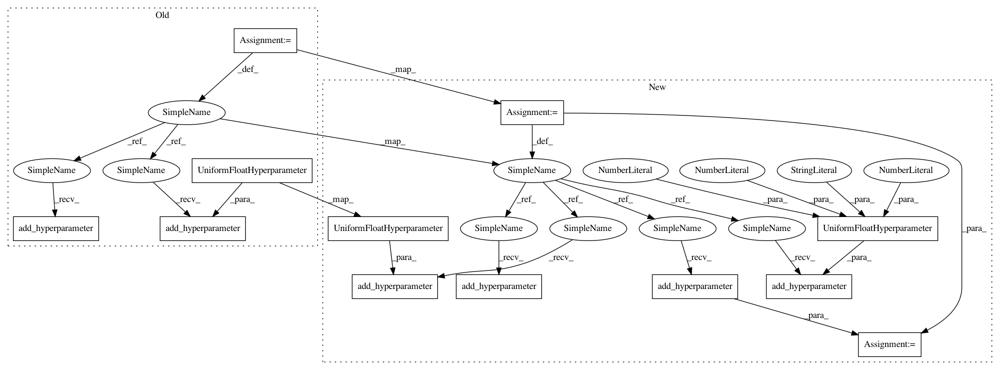

d751eafdbc175d8009fd0dea5d4fab3f722e366c,ParamSklearn/components/classification/lda.py,LDA,get_hyperparameter_search_space,#Any#,60
Before Change
def get_hyperparameter_search_space(dataset_properties=None):
n_components = UniformIntegerHyperparameter("n_components", 1, 250,
default=10)
tol = UniformFloatHyperparameter("tol", 1e-5, 1e-1, default=1e-4,
log=True)
cs = ConfigurationSpace()
cs.add_hyperparameter(n_components)
cs.add_hyperparameter(tol)
return cs
After Change
@staticmethod
def get_hyperparameter_search_space(dataset_properties=None):
cs = ConfigurationSpace()
shrinkage = cs.add_hyperparameter(CategoricalHyperparameter(
"shrinkage", ["None", "auto", "manual"], default="None"))
shrinkage_factor = cs.add_hyperparameter(UniformFloatHyperparameter(
"shrinkage_factor", 0., 1., 0.5))
n_components = cs.add_hyperparameter(UniformIntegerHyperparameter(
"n_components", 1, 250, default=10))
tol = cs.add_hyperparameter(UniformFloatHyperparameter(
"tol", 1e-5, 1e-1, default=1e-4, log=True))
cs.add_condition(EqualsCondition(shrinkage_factor, shrinkage, "manual"))
return cs
In pattern: SUPERPATTERN
Frequency: 3
Non-data size: 12
Instances
Project Name: automl/auto-sklearn
Commit Name: d751eafdbc175d8009fd0dea5d4fab3f722e366c
Time: 2015-10-01
Author: feurerm@informatik.uni-freiburg.de
File Name: ParamSklearn/components/classification/lda.py
Class Name: LDA
Method Name: get_hyperparameter_search_space
Project Name: automl/auto-sklearn
Commit Name: d751eafdbc175d8009fd0dea5d4fab3f722e366c
Time: 2015-10-01
Author: feurerm@informatik.uni-freiburg.de
File Name: ParamSklearn/components/classification/lda.py
Class Name: LDA
Method Name: get_hyperparameter_search_space
Project Name: automl/auto-sklearn
Commit Name: 53da02f8d5923d32f3c11a28b0e11f64d905399d
Time: 2015-10-01
Author: feurerm@informatik.uni-freiburg.de
File Name: ParamSklearn/components/regression/gradient_boosting.py
Class Name: GradientBoosting
Method Name: get_hyperparameter_search_space
Project Name: automl/auto-sklearn
Commit Name: 03cc78a8beb1f3e8b2bd29c9ba5063ba81955336
Time: 2015-10-01
Author: feurerm@informatik.uni-freiburg.de
File Name: ParamSklearn/components/classification/sgd.py
Class Name: SGD
Method Name: get_hyperparameter_search_space